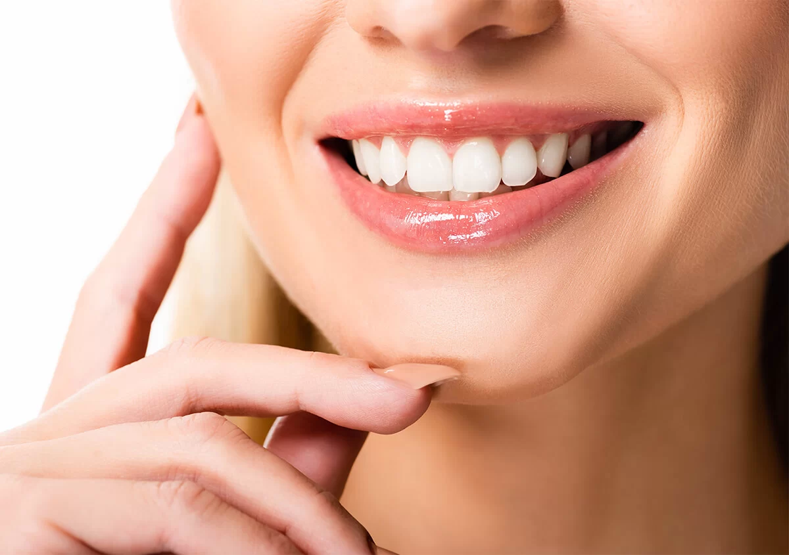
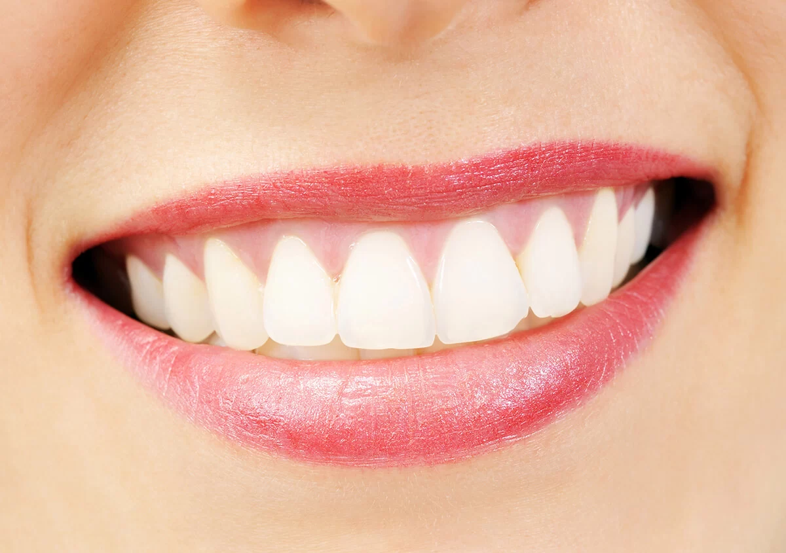
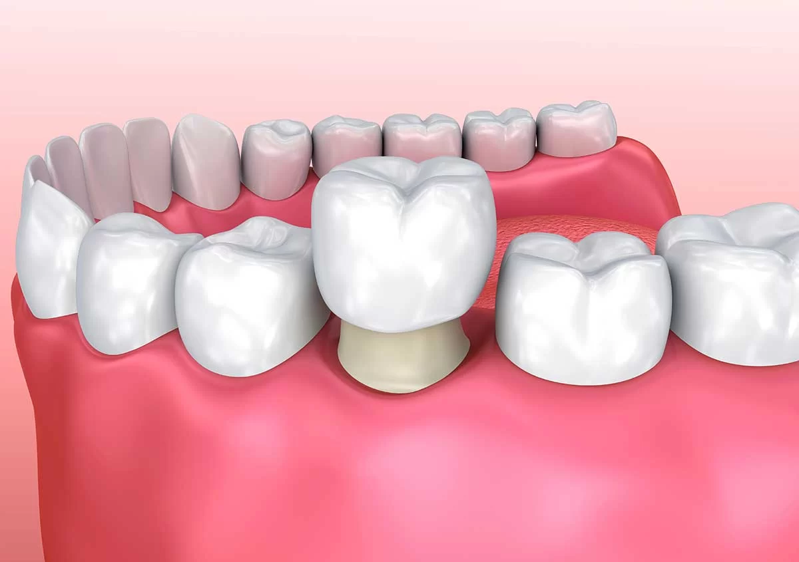
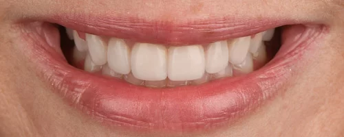
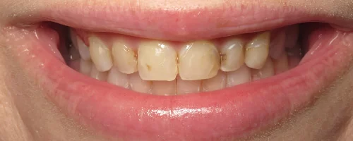
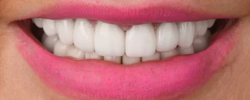
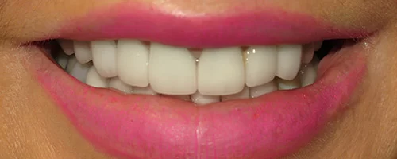
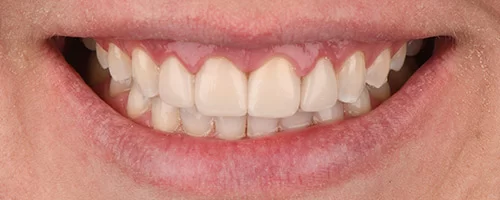
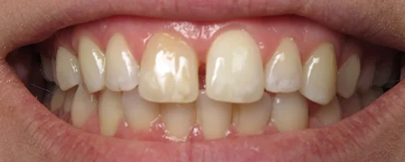

Stains or discoloration
Professional teeth whitening may be discussed when the goal is a brighter shade and the teeth and gums are healthy enough for treatment.
Walden Dental · Austin, Texas
We offer cosmetic dental care in Austin for people who want to discuss tooth color, shape, spacing, wear, chips, or missing teeth.
Start with the change that matters to you. Dr. David Frank will review your oral health and explain which options, tradeoffs, and sequence fit your smile.

Start with what you would like to change
Cosmetic dentistry focuses on appearance, but color, shape, spacing, wear, and missing teeth do not all call for the same approach. Some restorations also serve a functional purpose. An examination helps separate cosmetic choices from oral-health or bite needs that should be addressed first.
Professional teeth whitening may be discussed when the goal is a brighter shade and the teeth and gums are healthy enough for treatment.
Veneers or cosmetic bonding may be considered after reviewing how much tooth change is involved and how the result will be maintained.
A crown can restore a damaged tooth while changing its visible form. Walden Dental provides selected same-day crown care with on-site CEREC technology.
Dental implants, bridges, or removable options address missing teeth. Veneers do not replace missing teeth.
Compare the closest routes
These services overlap, but they differ in purpose, tooth alteration, maintenance, timing, and cost. The goal is not to pick from a menu on your own. It is to understand the useful questions before your consultation.
 Color
ColorChanges tooth shade without changing tooth shape. Existing restorations do not whiten the same way natural enamel does.
Explore teeth whitening
Shape and surfaceCustom coverings for selected visible teeth. Discuss tooth preparation, color matching, maintenance, and repair or replacement.
Explore dental veneers
Form and strengthUsed when a tooth also needs structural restoration. Selected crowns may be designed and made on site with CEREC.
Explore same-day crowns Coordinated planningMay bring more than one appropriate treatment into a planned sequence. It is not a preset package and depends on the evaluation.
Explore smile planning





These photos show individual patients' results, not a prediction of your outcome. Treatment needs and results vary.
How we plan cosmetic care
Cosmetic care begins with a consultation and examination. Dr. Frank reviews what you want to change, the condition of your teeth and gums, your bite, and whether records or imaging are useful before discussing options.
Some goals may involve one service. Others may be sequenced with restorative care. Timing and maintenance depend on the treatment and your starting point.
Talk about color, shape, spacing, wear, missing teeth, timing, and how much tooth alteration you are comfortable considering.
Review teeth, gums, bite, existing restorations, health history, and any records needed for the decision.
Discuss appropriate routes, sequencing, maintenance, alternatives, estimate, and realistic limitations.
Intraoral images can enlarge color photos or video so you and Dr. Frank can review findings together.
CEREC CAD/CAM can support selected same-day crown and applicable restorative or cosmetic cases.
Electric handpieces are used during applicable restorative and cosmetic procedures, including selected crown and veneer preparation.

Who will plan your care?
Dr. David Frank is the owner and founder of Walden Dental. His first-party biography documents undergraduate study at the United States Air Force Academy and dental education at Tufts University School of Dental Medicine.
He moved to Austin in 2015 and provides the cosmetic and restorative services presented by Walden Dental, including individualized consultation and smile planning.
Meet Dr. David FrankPatient experience
Barbara shares her experience with Zoom whitening at Walden Dental.
Watch Barbara's storyThis is one person's experience. Results and experiences vary.
Dr. Frank explains
Dr. Frank discusses the practice's in-house approach to cosmetic planning and the patient's role in deciding whether to pursue a smile makeover.
Watch Dr. Frank's videoDocumented at Walden Dental

Priscilla experienced wear and shifting related to clenching and grinding. Priscilla wanted to improve her front teeth without orthodontics, and Walden Dental used same-day ceramic crowns in her individual plan.
This case is educational. It does not establish what another patient will need or experience.


Cost and payment
Cosmetic dentistry does not have one universal price. Cost can change with the service, number of teeth, materials, records, laboratory or on-site work, and whether restorative treatment is also needed.
Treatment type and number of teeth
Condition of teeth, gums, and existing restorations
Materials, records, and treatment sequence
Maintenance, repair, or future replacement considerations
Your Austin dental office
Walden Dental is at 9800 N Lake Creek Pkwy #150 on Floor 1 in Shops at Walden Park.
Wheelchair-accessible entrance. Patients visit our Austin office from nearby Cedar Park, Round Rock, and Brushy Creek.
Questions before a consultation
Your consultation may cover professional whitening, veneers, cosmetic bonding, crowns, bridges, implants, fillings, or coordinated smile planning. Some options are primarily appearance-focused; others also restore or replace teeth.
People often ask about stains, chips, wear, spacing, tooth shape, or missing teeth. Suitability depends on oral health, bite, the condition of the teeth and gums, and the specific goal.
Timing varies. Some options may be completed in one visit, while restorations or combined plans can require several phases. Your consultation should clarify the likely sequence before treatment begins.
Cost depends on the treatment, number of teeth, materials, records, and whether restorative work is also needed. Walden Dental provides an individualized estimate after evaluation.
Ready when you are
Book online or call Walden Dental to discuss cosmetic dental care in Austin.